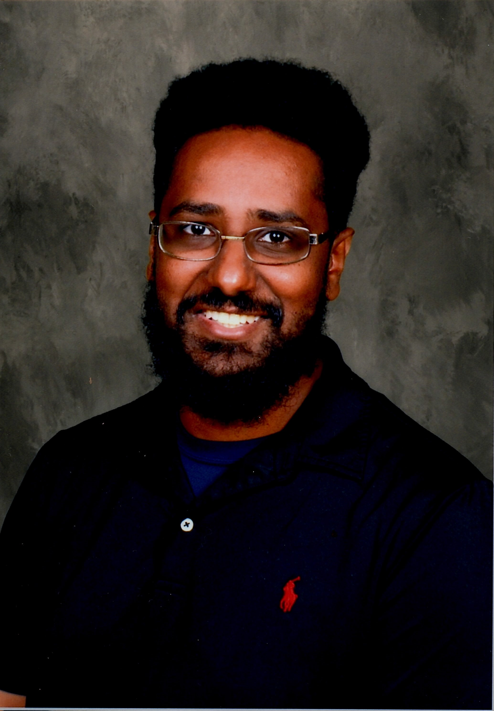

Bio

Greetings to my portfolio! My name is Shalom Dawit. A full-stack developer with big dreams. My educational background consists of Uconn's School of Engineering, where I learned electrical engineering and, more recently, improved on my coding skills, becoming a Full-Stack Coding Bootcamp Grad! Skills that now include Frontend and Backend web development. Having experience with HTML, CSS3, Javascript, React, SQL & NoSQL databases and so much more. Enjoyment in mixing these aspects together and molding them to create a unique product. Creating websites and apps individually as well as with collaborators. A demonstration of these skills was presented in a group project (ToolShed app) I worked on involving React, Sequelize, BcryptJS, NodeJS, SCSS and more. My interpersonal skills have made me easy to work with, while pushing my groups to increased productivity. Hopefully that translates my work from before, current and into the future.
RESUME